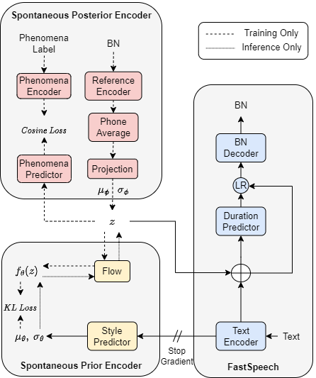
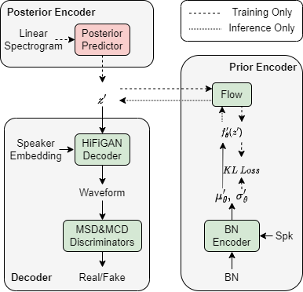

Spontaneous speaking style exhibits notable differences from other speaking styles due to various spontaneous phenomena (e.g., filled pauses, prolongation) and substantial prosody variation (e.g., diverse pitch and duration variation, occasional non-verbal speech like smile), posing challenges to modeling and prediction of spontaneous style. Moreover, the limitation of high-quality spontaneous data constrains spontaneous speech generation for speakers without spontaneous data. To address these problems, we propose SponTTS, a two-stage approach based on bottleneck (BN) features to model and transfer spontaneous style for TTS. In the first stage, we adopt a Conditional Variational Autoencoder (CVAE) to capture spontaneous prosody from a BN feature and involve the spontaneous phenomena by the constraint of spontaneous phenomena embedding prediction loss. Besides, we introduce a flow-based predictor to predict a latent spontaneous style representation from the text, which enriches the prosody and context-specific spontaneous phenomena during inference. In the second stage, we adopt a VITS-like module to transfer the spontaneous style learned in the first stage to target speakers. Experiments demonstrate that SponTTS is effective in modeling spontaneous style and transferring the style to the target speakers, generating spontaneous speech with high naturalness, expressiveness, and speaker similarity. The zero-shot spontaneous style TTS test further verifies the generalization and robustness of SponTTS in generating spontaneous speech for unseen speakers.
Fig.1 The overview architecture of SponTTS.

Fig.2 The structure of Text2BN.

Fig.3 The structure of BN2Wave.
2. Compared method for audio samples
Reading style:We remove the spontaneous posterior encoder and prior encoder from SponTTS, a vanilla two-stage TTS framework without spontaneous style modeling, which use a reading-style corpus for training.
Baseline: We remove the spontaneous posterior encoder and prior encoder from SponTTS, a vanilla two-stage TTS framework without spontaneous style modeling, which use a spontaneous corpus for training.
TP: We remove the reference encoder and variational processes, and the style predictor directly predicts phenomena embedding corresponding to the output of the phenomena encoder, which means only spontaneous phenomena modeling is considered.
TPVAE: We remove the phenomena predictor and phenomena encoder from SponTTS, which means we only model spontaneous prosody.
SponTTS: Proposed method.
3. Audio Samples of spontaneous modeling
Reading style
Baseline
TP
TPVAE
SponTTS
[rythm] Text: 然后就是你自己想买点东西啊，然后妈妈给的有时候想存一点就是一点吧。(Then you want to buy something yourself, and sometimes you want to save a little bit from what your mother gives you.)
[prolongation] Text: 我在翻面，然后煎一个差不多七分熟左右吧。(I'm flipping it over and frying it until it's almost medium-rare.)
[injection] Text: 哇塞，你好厉害啊，可以给我签个名吗？(Wow, you are so awesome. Can you sign your name for me?)
[stress] Text: 哎，不是有一句话这样说嘛，你永远不知道明天和意外哪个先来。(Hey, isn't there a saying that says, you never know which will come first, tomorrow or the accident.)
4. Audio Samples of spontaneous transfering for seen speakers
Target speaker
Reading style
Baseline
TP
TPVAE
SponTTS
[silent pause] Text: 哦那但是嗯，这礼拜明明天是多少钱了明天？(Oh, but um, how much will it cost to- tomorrow this week?)
[stress] Text: 后来回来的时候，我自己坐着飞机回来的。(When I came back later, I took a plane back by myself.)
[stress] Text: 你告诉我我就知道了。(Just tell me and I'll know.)
[injection] Text: 唉好吧，那还好，其实我现在花钱就是也很多。(Oh well, that’s okay. In fact, I spend a lot of money now.)
[smile] Text: 呵呵嗯。(Haha um.)
[stress] Text: 当然需求的话肯定是有这一部分的。(Of course, if there is a demand, there will definitely be this part.)
[rythm] Text: 嗯，然后它还拿出来讲，结果后来就被网友给人肉出来了。(Well, then it was talked about, but later it was exposed by netizens.)
[silent pause] Text: 他们看到的永远都是别人想要他们看到的东西，他们就也会变得越来的越浮躁。(What they see is always what others want them to see, and they become more and more impetuous.)
5. Audio Samples of spontaneous transfering for unseen speakers
Target speaker
Reading style
Baseline
TP
TPVAE
SponTTS
[injection] Text: 唉好吧，那还好，其实我现在花钱就是也很多。(Oh well, that's okay, in fact, I spend a
lot of money now.)
[silent pause] Text: 就我不是很喜欢就是。(It's just that I don't like it very much.)
[silent pause] Text: 因为他们都是吃草长大的。(Because they all grew up eating grass.)
[stress] Text: 哎，走不了啦然后那个饭堂的那个玻璃门被撞的声儿。(Hey, I couldn't leave, and then there was a sound of the glass door of the canteen being hit.)